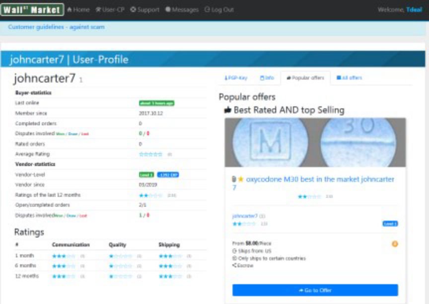
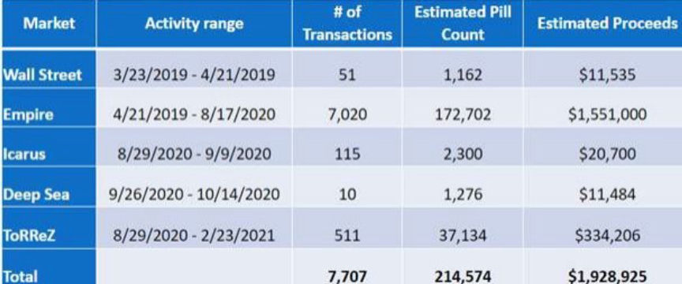
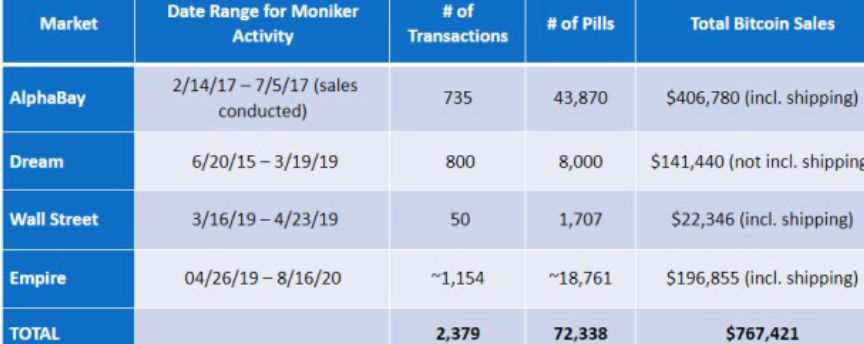
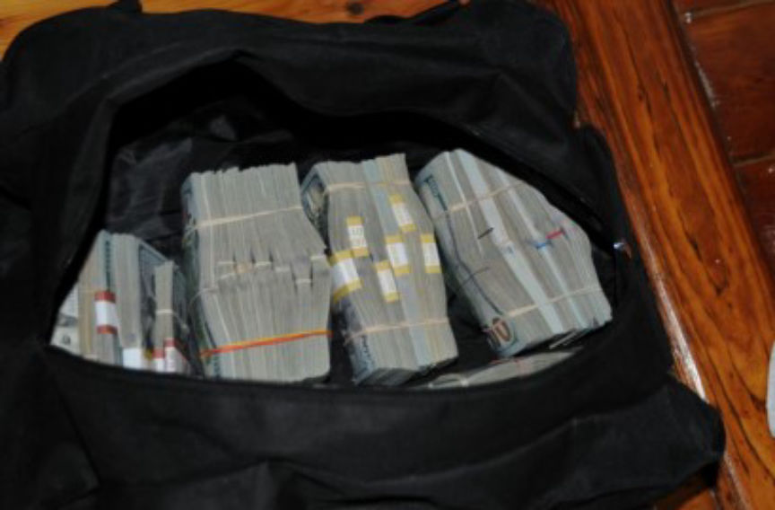
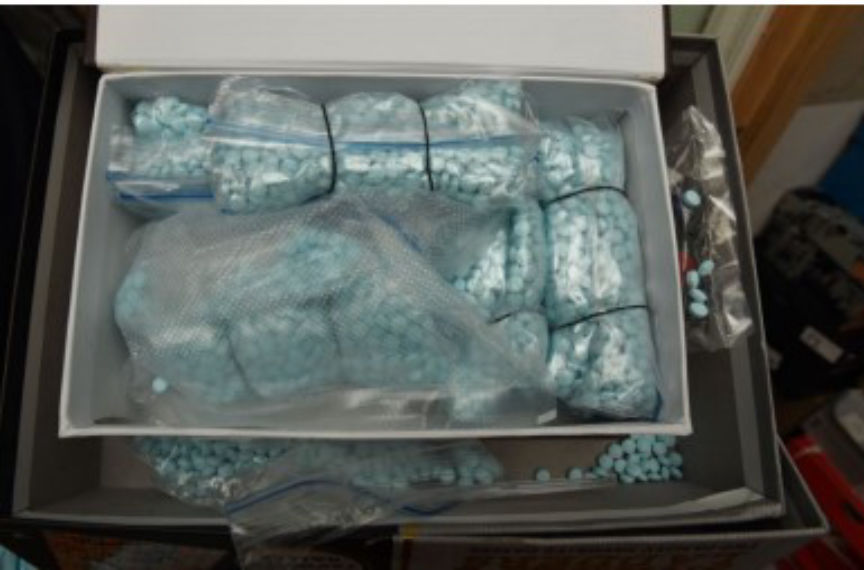
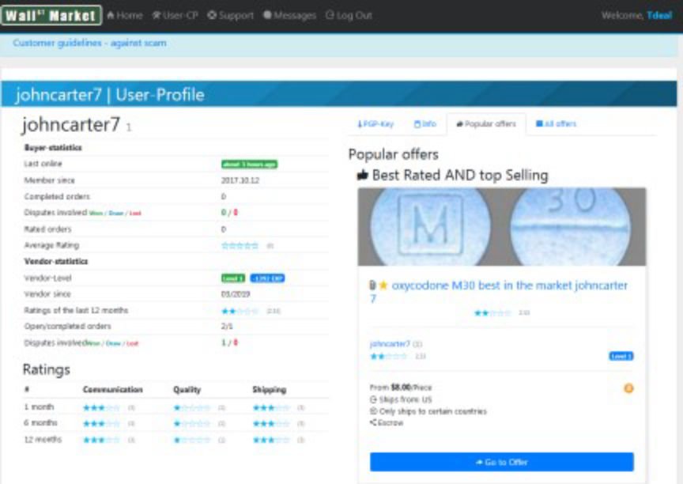
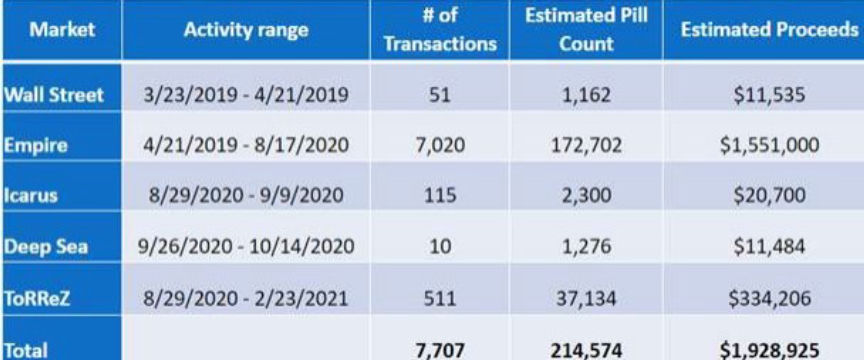
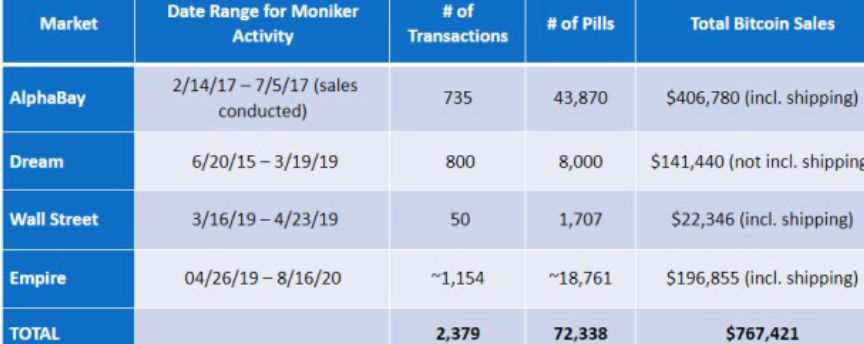
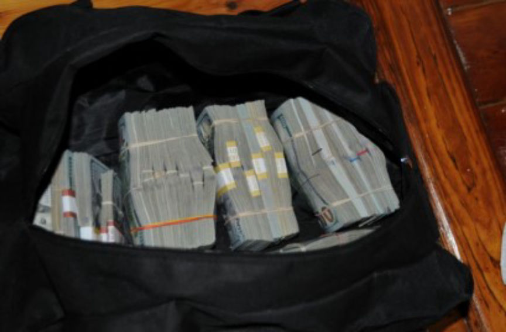
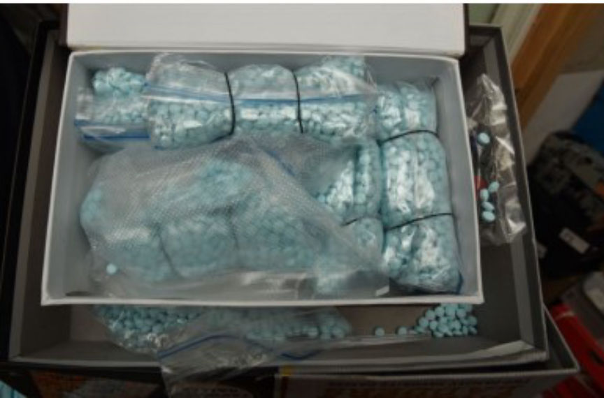

Three Men Imprisoned for Distributing Counterfeit Oxycodone Pills
Three individuals were sentenced for their roles in the distribution of kilos of fentanyl-laced oxycodone pills throughout the US via multiple dark web marketplaces.

According to court documents, from at least February 2017 through August 2020, Luis Miguel Teixeira Spencer, 32, and Olatunji Dawodu, 38, both from Florida, participated in the distribution of counterfeit oxycodone pills through several darknet marketplaces, including AlphaBay, Wall Street, Dream, and Empire under the vendor name "johncarter7."
The third defendant, Alex Ogando, 37, of Providence, Rhode Island, and Dawodu distributed the pills through multiple dark web markets, including Wall Street, Empire, Icarus, Deep Sea, DarkMarket, and ToRReZ, from at least March 2019 through February 2021, under the username "PolarSprings."
Law enforcement agencies launched investigations into the sale of oxycodone pills by PolarSprings in June 2019. The investigators made multiple undercover purchases from the vendor during the investigations. The drug packages arrived in USPS Priority Mail envelopes and were shipped from either Miami or Boston. All the pills received by the investigators tested positive for fentanyl.
The takedown of Wall Street Market gave the investigators access to the transaction history of PolarSprings. The investigators established that PolarSprings deposited $200 in bitcoin to Wall Street on March 23, 2019, as payment for the market's vendor bond. The investigators traced back the bitcoin to a p2p bitcoin trader. The trader agreed to give information to the investigators and identified Ogando as the one who had purchased the bitcoin on March 22. The trader also provided records of communications made during p2p trades with Ogando.

From information acquired from the vendor's profile on multiple markets, the investigators believe PolarSprings fulfilled more than 7,700 orders. This led to the distribution of a total of more than 214,000 pills, with a total weight of at least 26.75 kilograms. PolarSprings made approximately $1.9 million from the sales.
Investigations into the vendor johncarter7 also involved multiple undercover purchases from the vendor between March and June of 2019. The investigators also made direct purchases from the vendor through Jabber.
In the direct purchases, the vendor gave the investigators, bitcoin addresses through which they made payments. The investigators traced the bitcoin to a Binance account registered to Spencer. The Binance account had been accessed hundreds of times from an IP address associated with Spencer's residence.
In the course of the investigations, the investigators surveilled Spencer. During the surveillance, the investigators saw Spencer and Dawodu together on numerous occasions.
The agents observed Dawodu drop packages into mailboxes on multiple occasions. In one such instance, a postal inspector retrieved two Priority Mail envelopes dropped by Dawodu into a USPS mailbox. On being interviewed, the intended recipients of the two packages told the investigators that they had ordered the pills contained in the packages from johncarter7 on Empire Market.

The investigators established that johncarter7 fulfilled a total of more than 2,300 orders on four dark web markets. The vendor as a result distributed over 72,000 counterfeit oxycodone pills and received more than $767,000 in bitcoin.
The investigators executed search warrants on the defendants' residences and arrested them on February 23, 2021. At Ogando's residence, the investigators found and seized approximately $350,000 in cash, a money counter, and approximately 1,700 grams of counterfeit oxycodone pills. The investigators also seized 30 USPS Priority Mail envelopes packaged with pills.

Electronic devices found in the residence revealed that Ogando had the PGP key associated with the PolarSprings vendor accounts. The investigators also recovered evidence of constant communication between Ogando, Spencer, and Dawodu. The messages exchanged revealed that Dawodu was involved in the coordination of the distribution of pills sold by Ogando through PolarSprings vendor accounts.

A search of Dawodu's residence led to the seizure of approximately 1,300 grams of pills, electronic devices, and approximately 30 USPS mailing envelopes.
At Spencer's residence, the investigators seized More than $12,000 in cash and electronic devices. Evidence from cryptocurrency wallets that the investigators gained access to, showed that in addition to receiving funds from addresses associated with johncarter7, Spencer had received bitcoin from Ogando.
The three defendants were convicted of conspiring in the distribution of 400 grams or more of a mixture and substance containing a detectable amount of fentanyl.
Dawodu was sentenced to 12 years in prison while Spencer was imprisoned for 12 years and 6 months in early March 2023. On March 17, 2023, the Honorable John D. Bates sentenced Ogando to 12 years in prison.

johncarter7's profile on Wall Street Market
According to court documents, from at least February 2017 through August 2020, Luis Miguel Teixeira Spencer, 32, and Olatunji Dawodu, 38, both from Florida, participated in the distribution of counterfeit oxycodone pills through several darknet marketplaces, including AlphaBay, Wall Street, Dream, and Empire under the vendor name "johncarter7."
The third defendant, Alex Ogando, 37, of Providence, Rhode Island, and Dawodu distributed the pills through multiple dark web markets, including Wall Street, Empire, Icarus, Deep Sea, DarkMarket, and ToRReZ, from at least March 2019 through February 2021, under the username "PolarSprings."
Law enforcement agencies launched investigations into the sale of oxycodone pills by PolarSprings in June 2019. The investigators made multiple undercover purchases from the vendor during the investigations. The drug packages arrived in USPS Priority Mail envelopes and were shipped from either Miami or Boston. All the pills received by the investigators tested positive for fentanyl.
The takedown of Wall Street Market gave the investigators access to the transaction history of PolarSprings. The investigators established that PolarSprings deposited $200 in bitcoin to Wall Street on March 23, 2019, as payment for the market's vendor bond. The investigators traced back the bitcoin to a p2p bitcoin trader. The trader agreed to give information to the investigators and identified Ogando as the one who had purchased the bitcoin on March 22. The trader also provided records of communications made during p2p trades with Ogando.

Sales made by PolarSprings
From information acquired from the vendor's profile on multiple markets, the investigators believe PolarSprings fulfilled more than 7,700 orders. This led to the distribution of a total of more than 214,000 pills, with a total weight of at least 26.75 kilograms. PolarSprings made approximately $1.9 million from the sales.
Investigations into the vendor johncarter7 also involved multiple undercover purchases from the vendor between March and June of 2019. The investigators also made direct purchases from the vendor through Jabber.
In the direct purchases, the vendor gave the investigators, bitcoin addresses through which they made payments. The investigators traced the bitcoin to a Binance account registered to Spencer. The Binance account had been accessed hundreds of times from an IP address associated with Spencer's residence.
In the course of the investigations, the investigators surveilled Spencer. During the surveillance, the investigators saw Spencer and Dawodu together on numerous occasions.
The agents observed Dawodu drop packages into mailboxes on multiple occasions. In one such instance, a postal inspector retrieved two Priority Mail envelopes dropped by Dawodu into a USPS mailbox. On being interviewed, the intended recipients of the two packages told the investigators that they had ordered the pills contained in the packages from johncarter7 on Empire Market.

Sales made by johncarter7
The investigators established that johncarter7 fulfilled a total of more than 2,300 orders on four dark web markets. The vendor as a result distributed over 72,000 counterfeit oxycodone pills and received more than $767,000 in bitcoin.
The investigators executed search warrants on the defendants' residences and arrested them on February 23, 2021. At Ogando's residence, the investigators found and seized approximately $350,000 in cash, a money counter, and approximately 1,700 grams of counterfeit oxycodone pills. The investigators also seized 30 USPS Priority Mail envelopes packaged with pills.

Cash seized from Ogando
Electronic devices found in the residence revealed that Ogando had the PGP key associated with the PolarSprings vendor accounts. The investigators also recovered evidence of constant communication between Ogando, Spencer, and Dawodu. The messages exchanged revealed that Dawodu was involved in the coordination of the distribution of pills sold by Ogando through PolarSprings vendor accounts.

Pills seized from Dawodu
A search of Dawodu's residence led to the seizure of approximately 1,300 grams of pills, electronic devices, and approximately 30 USPS mailing envelopes.
At Spencer's residence, the investigators seized More than $12,000 in cash and electronic devices. Evidence from cryptocurrency wallets that the investigators gained access to, showed that in addition to receiving funds from addresses associated with johncarter7, Spencer had received bitcoin from Ogando.
The three defendants were convicted of conspiring in the distribution of 400 grams or more of a mixture and substance containing a detectable amount of fentanyl.
Dawodu was sentenced to 12 years in prison while Spencer was imprisoned for 12 years and 6 months in early March 2023. On March 17, 2023, the Honorable John D. Bates sentenced Ogando to 12 years in prison.